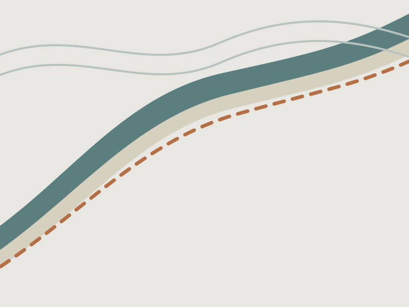
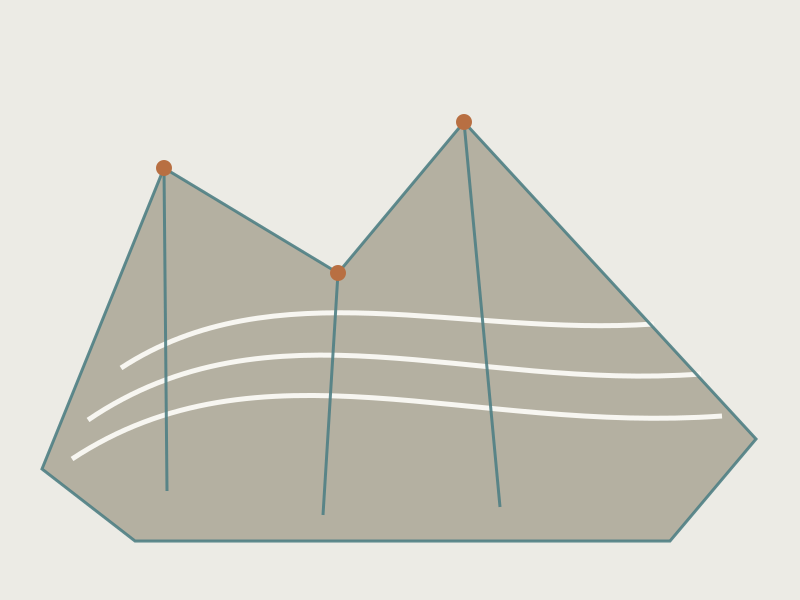
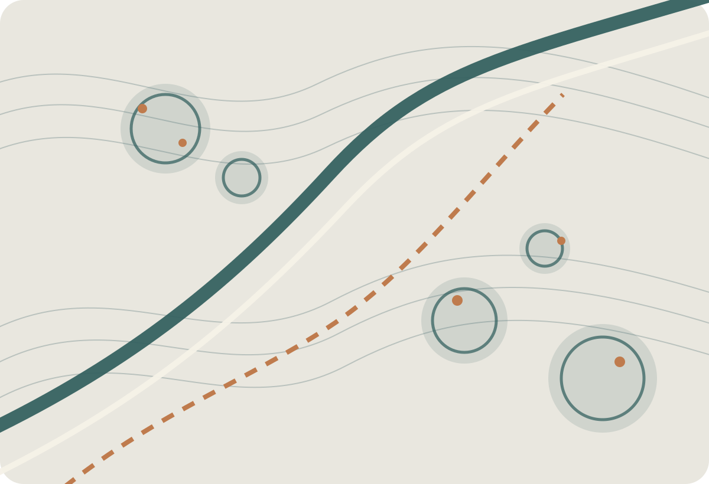

Current Research Activity
Using both field and analytical techniques, I investigate how deformation mechanisms in crustal faults localize strain from the grain scale to crustal-scale fault architecture.

Ductile Deformation in Continental Crustal Faults and Subduction Zones
I investigate the microstructural and mechanical processes of ductile deformation in faults exhumed from the brittle–ductile transition zone and active carbonate-hosted faults. These fault rocks preserve evidence of viscous deformation associated with tectonic loading, aseismic slip, and strain accumulation prior to earthquake rupture.
My work links preserved fault-rock fabrics to creep, cavitation, ductile fracture, and rheological behaviour at the base of the seismogenic zone and along subduction interfaces.
Micro- and Nanoscale Deformation
I use high-resolution SEM–EBSD and EDS to investigate how grains recrystallize, how dislocations accumulate, and how nanocavities evolve into ductile fractures. EBSD-derived dislocation data provide quantitative constraints on stress, strain, and deformation mechanisms in natural fault rocks.
These measurements connect microstructural processes to the mechanical evolution of larger fault systems.

Digital Outcrops and Fault-Zone Architecture
Field-based structural geology remains central to my research. I combine geological mapping with 3D digital outcrop modelling and borehole-data integration to document structures that cannot be captured from individual samples alone.
This scale-integrated approach helps relate local deformation fabrics to the geometry and mechanical development of crustal-scale faults.

Statistics and Machine Learning in Structural Geology
I apply statistical and machine-learning methods to large geological datasets while retaining their physical and geological context. Current applications include the separation of relict and recrystallized grain populations and the quantitative analysis of EBSD-derived microstructures.
Related methods: Structural analysis · SEM/EBSD · EDS · 3D modelling · MATLAB · MTEX · Python · Statistics